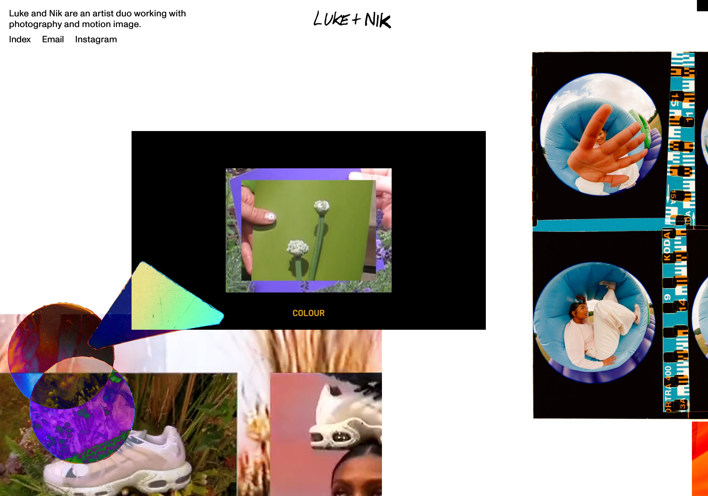
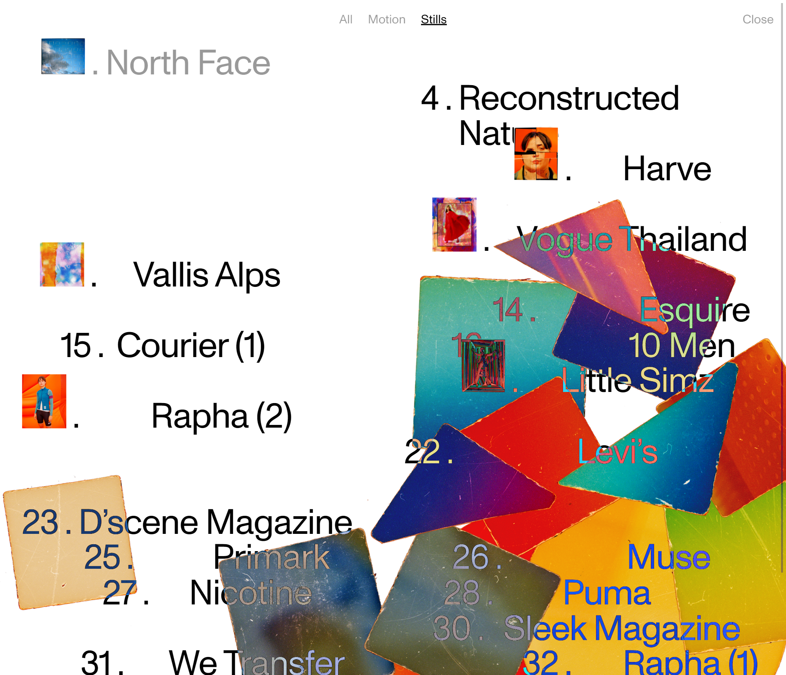
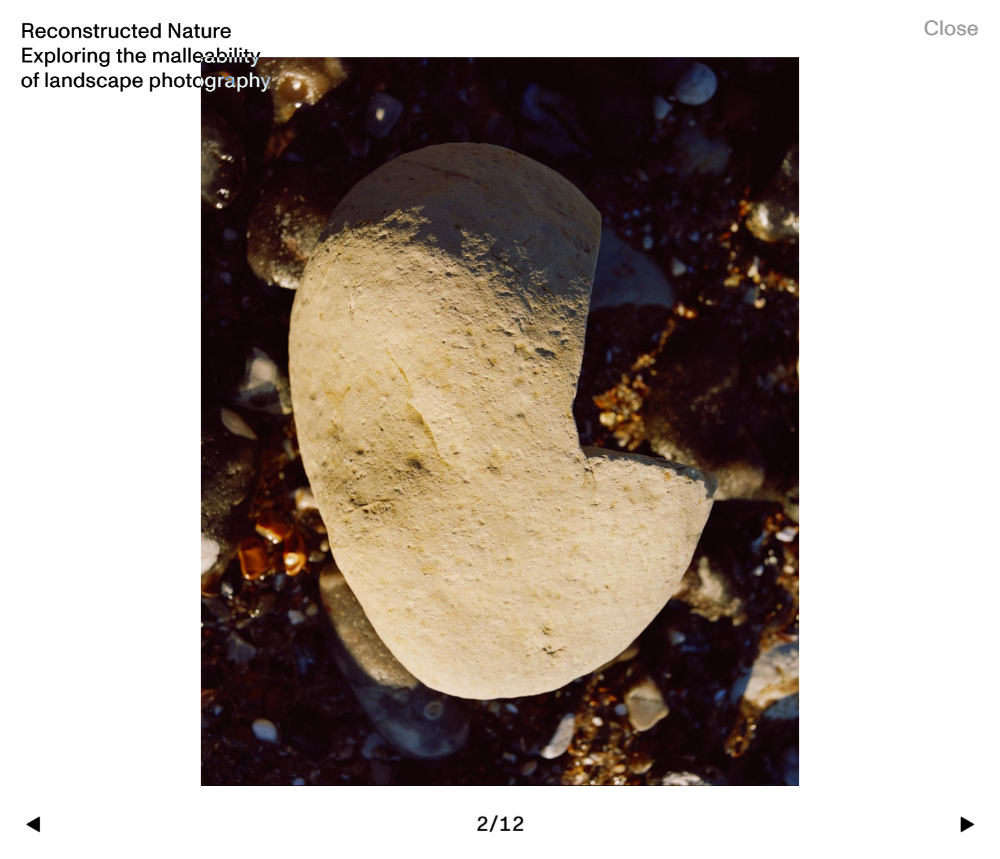

Website 1: Luke and Nick
Home Page
This is the website of an artist duo (Luke & Nick) who are working with photography and motion image
I found their home page very intriguing since it was very unconventional when compared to the average website which follows most UI rules. The main content that is being displayed on the website has no sense of symmetry and doesn't show any consistent spacing or proximity between the images. Their alignment is also not always symmetrical nor is the size. The navigation is a very minimalist design with only three buttons and very simple animations when interacted with like transition from bold to light.
This however helps in catching the eye of the user to multiple different content that is being displayed. The hierarchy is given to the images displayed in large sizes on the menu, they keep moving around and changing when you scroll. The screen also keeps adapting to the screen size of the device you're using. I've presented how they look on PC, mobile and tablet.
Page 1
This is an index page which gives the user access to navigate through the website.
A cool thing about this website is that if you stay idle some strange shapes appear on the screen which go away only when you hover over them with your cursor. The website uses a very modern font which I found very appealing. It looks similar to the font that OnePlus uses and the overall typography of the website is done really well. The text becomes lighter when you hover over it indicating that it has been selected.
The layout of the website is very standard. It only had a single main column and one main navigation bar for primary navigation. Some of the text overlap the contact and then change into their negative color. This provides a very nice visual contrast.
Page 2
This is the page that appears when you click on one of the categories of images above in the index page of the website.
The close button is on the top right of the screen and I find it a little annoying that it is very far away and feel like it would have been better to just place an X symbol instead of “Close”.
The images can be changes with the arrows displayed on the far right and left side. There is no interaction or hover animation for them though. The spacing in the content and text is not consistent but it has quite evidently been done on purpose as the website gives out that vibe of “out of the box”.
Website 2: Youtube
Home Page
Youtube is one of the most popular free video sharing websites which make it easier to watch videos online.

YouTube's home page is extremely user friendly and very straight-forward. It does a very good job at displaying videos to the user with a good level of proximity and follows the Gestalts law in terms of everything being very consistent. The layout is very symmetrical and well aligned. The visual hierarchy is well presented, giving the most information, that is the videos the spotlight. The placement of all the buttons and CTAs are well done and very simple to understand.


The UI is also responsive to different screen sizes and has adapted well to the different aspect ratios. This sidebar helps in organizing the content and displays a selection of videos just for you. You can also get access to your subscriptions and created playlists here. The interaction of hover is a simple animation that lights up the text and section around it.
Page 1
This is the page that appears when you click on your liked videos and the layout of it is that of any of your Youtube playlists created by either you or YouTube itself.

The typography of the website is also very clean and simple. The important text is highlighted and indicated very well and the font which is Roboto is also easy to understand and aesthetically pleasing. The layout of YouTube is well planned out and it follows a multiple column grid.


It also abides by the F pattern and presents it's information in terms of an F like manner. The page that appears when you click on a playlist is mostly single column and it presents the information about each video well and the Gaussian blur also helps increasing the complexity of the screen.
Page 2
This is the page that appears when you click on a video. It consists of a video player, comments description of the video and more recommended videos from Youtube on the left-hand side.

The interactions and animations on the buttons are subtle yet have a large impact on the entire design of the website. The video players is also well designed with clean and simple icons and provide a lot of options as well and it has places in a way where it does not seem like too many options either.


The proximity between the content that is displayed is indicated well and it is simple for the user to differentiate between different sections of the page and different videos. It's a perfect website for people who are new to the internet and not so used to technology.